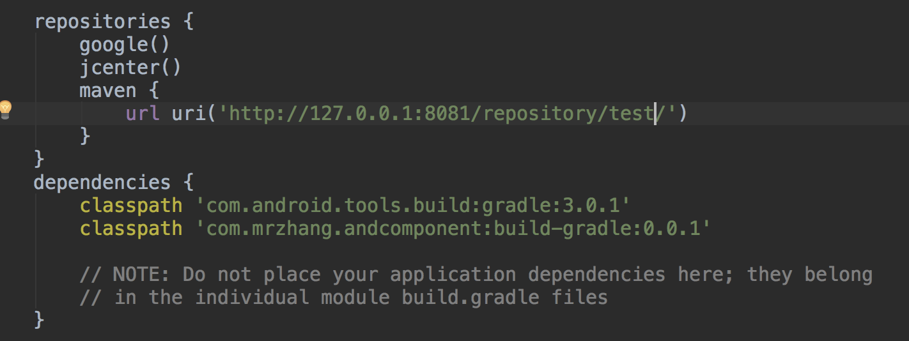

Mac 搭建本地 nexus-maven 仓库
1. 下载 nexus
###2. 设置全局变量
解压 zip 文件，配置 nexus 下 bin 目录全局变量，打开终端输入：
open .bash_profile 在 profile 文件下添加环境变量：
|
|
环境变量立即生效：source ~/.bash_profile
###3.启动 nexus
终端进入 nexus 的 bin 目录后，输入：./nexus start 启动 nexus，浏览器打开 http://localhost:8081/nexus/ 顺利打开则安装成功。
###4. 登录
右上角登录，账号：admin 密码：admin123
###5. 新建仓库
- 设置按钮
- Repositories
- Create repository
- 选择recipe - maven
- 设置名称
- 复制 url 用于上传
注释：
- hoste，本地仓库，通常我们会部署自己的构件到这一类型的仓库。比如公司的第二方库。
- proxy，代理仓库，它们被用来代理远程的公共仓库，如maven中央仓库。
- group，仓库组，用来合并多个hosted/proxy仓库，当你的项目希望在多个repository使用资源时就不需要多次引用了，只需要引用一个group即可。
- virtual，虚拟仓库。
###6. 上传到仓库
在 Android Studio 中，编写 build.gradle 文件：
|
|
然后点击，右侧 gradle 中对应的 uploadArchives，成功之后既可以在仓库中看到。
###7. 引用仓库文件
在根 build.gradle 文件中引用：
